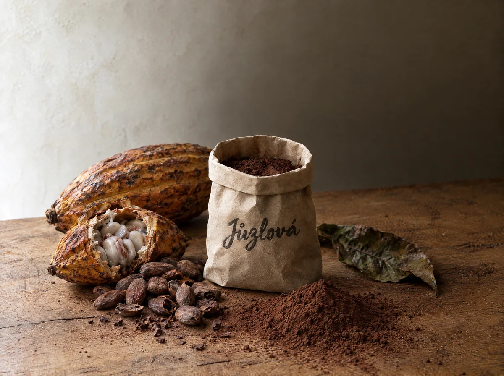

Kakao holländischer Art
Dunkler Konditorkakao mit 21 % Fett. Kräftige Farbe und voller Geschmack für Kuchen und Getränke.
- Preis
- 500 g / 100 Kč
- So bestellen Sie
- Kontakt · +420 728 466 141 · juzlj@seznam.cz

Wir bieten einen ausgezeichneten dunklen Konditorkakao holländischer Art mit 21 % Fett an.
Er kommt in Kuchen und Gebäck besonders zur Geltung und verleiht ihnen eine satte, dunkle Kakaofarbe und vollen Geschmack. Auch köstliche Milchshakes und Cremes gelingen damit. Denselben Kakao mischen wir in unseren Kakaopudding.
Was unterscheidet Kakao holländischer Art?
Die Alkalisierung — er ist dunkler, weniger säuerlich und löst sich besser auf als naturbelassener Kakao. Mit 21 % Fett zählt er zu den hochwertigsten Konditorkakaos.